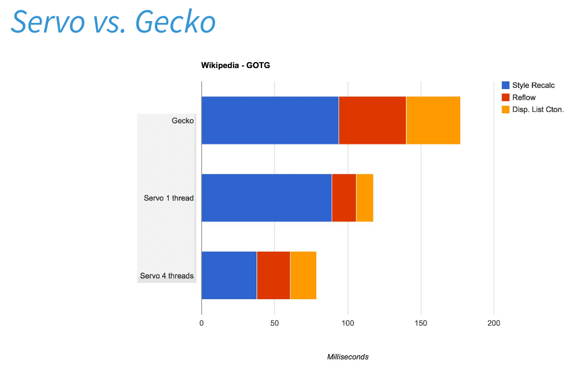
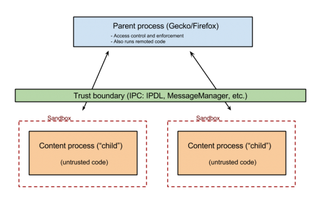

RedHat OpenHouse - Firefox presentation
Martin Stransky
<stransky@redhat.com>
RedHat Open House - Firefox
Recent Firefox state
Firefox version ... ?
Competes Chrome/Edge
Rust - for some components
Multiprocess Firefox (e10s)
Sandboxes
Mozilla catch plan
Massive e10s usage
Rust - Oxidation
Sandboxes
WebExtensions
New look - Photon
Firefox Nightly - get the beast
Latest and greatest!
Rust components (mp4, url-parser)
Full Firefox Multiprocess (2+1)
Sandboxes (L2, plugins)
Available by Flatpak!
...e10s, memory usage...
Red Hat/Linux focus - Flatpak
...Ikea Firefox...?
...Ubuntu Snaps...?
firefox-flatpak.mojefedora.cz

Default Firefox Sandbox
Pwn2Own - $1.000.000
Seccomp (kernel) on Linux

Extra (Firefox) Sandbox
Firejail
, SELinux, Flatpak sandbox...
....
X11 vs. Wayland
Lower GFX component
Faster (no drawing)
Secure (no access to other windows, root window, screen...)
...
much more!
Web/JS Applications
Firefox OS
Web applications
Emscripten
WebAssembly
Questions?